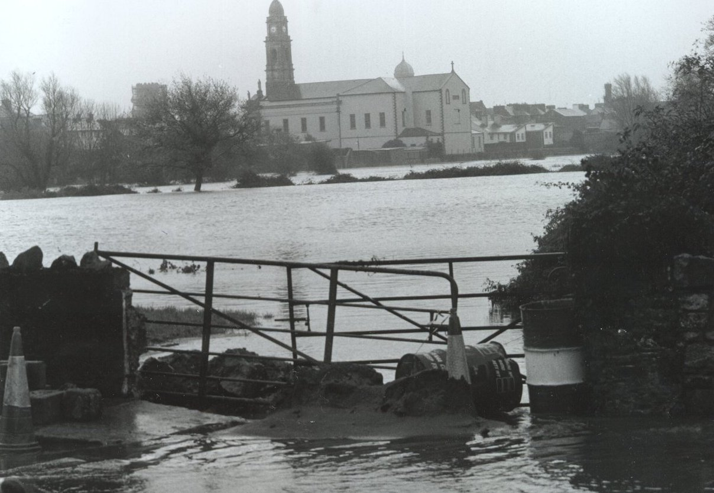

INTRODUCTION
For Clonmel, the history of flooding is documented back as far as 1924. The town of Clonmel in County Tipperary is subject to flooding from the river Suir. As a result, many people in the town live with the constant fear of flooding. The severity and speed of the floods has caused severe hardship and considerable damage to public and private property. In addition to individual property owners and commercial enterprises, the Local Authority and other services have to bear the cost of undertaking emergency measures, including the clean up and repair of public areas and roads. Above all, there is a huge sense of fear in the affected parts of town because of the vulnerability to flooding.
In summary, there is a strong demand from all the people of the town and its catchment area for an immediate and thorough solution to the constant threat of the river Suir overflowing its banks.

<
Previous> <Index> <Next>